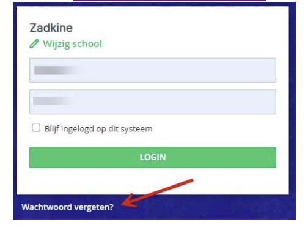

Ga naar https://tcr-ouder.educus.nl en log in met de gegevens uit de eerder ontvangen email. Bij de eerste keer inloggen met uw tijdelijke wachtwoord moet het wachtwoord gewijzigd worden.

Ga naar https://tcr-ouder.educus.nl. Kies daarna voor ‘Wachtwoord vergeten’.
Vul uw gebruikersnaam in en kies voor ‘Wachtwoord aanvragen’.
U ontvangt hierna op het in Eduarte geregistreerde e-mailadres een verificatielink om een nieuw
wachtwoord aan te maken.
Is uw kind 18 jaar geworden. Dan krijgt u mogelijk onderstaande melding, uw kind moet namelijk eerst
toestemming geven of u de gegevens mag opnieuw inzien.
Uw kind kan deze toestemming geven via het Eduarte Studentenportaal.
Klik op de button ‘TOESTAAN’ om de ouder toegang te geven tot de gegevens in het ouderportaal. Wanneer er meerdere ouders geregistreerd staan worden deze ook hier getoond en
moet voor elke ouder dit worden aangezet.